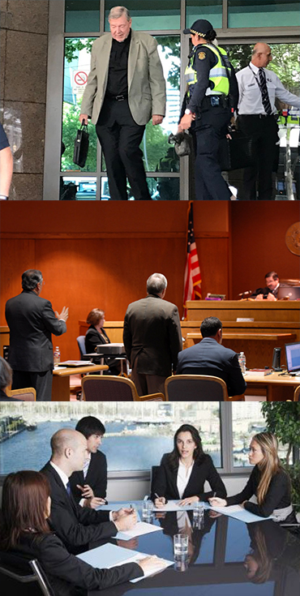

The following are some examples of cases that we now keep as reference given the complication of the situation,
and outstanding resolution.
The Robert Johnson Property Case.
This was a man that after 20 years of serving his landlord by doing household chores, inherited the house by the will of
such landlord after his passing. The landlord´s family on the other hand, was determined to ignore such will and with the
help of lawyers tried to take over this property. Mr. Johnson, who had no previous experience with judicial procedures
requested our help, and with the proper documentation we were able to represent him and fight for his right over the property,
also requestion compensation for all legal expenses.
The Johanna Sanchez sexual harassment case.
After months of being harassed by her former boss, Johanna was still afraid of speaking out because she feared losing her job.
A quick online consultation with our meeting stated she could file for a sexual misconduct report to have her boss respond for
his behavior. This case never made it to court, but the settlement reached outside of legal processes was most satisfactory, as
that person is no longer in the company and Johanna was able to keep her job.
Carlos E. and his dream to start a new life.
Under the immigration working visa Carlos, from Spain, migrated with the sole objective to start a new life,
but he soon realized that jobs available for immigrants demanded more time and effort for less pay, nevertheless,
Carlos took one promising job in software development. After a few months of hard work he became ill, but he was forced
to continue his work under the premise that he was an immigrant, days passed and Carlos couldn’t continue, he got fired
and then came to us. After a short battle with the company, we were able to guarantee Carlos rights and he got his
job back.
Identity supplantation.
Roger S. woke up one day with several missed calls from an insurance company claiming he owed money to them, after some
research he found out that somebody had used his identity to scam the company and put the blame on him. With the audios
recovered from the insurance company we were able to determine negligence on part of the insurance company by not verifying
the caller´s identity correctly, and so, we were able to solve this misunderstanding.
A problem with supposed local authorities.
Such was the case of Michael Smith, who after filing a report on corrupted authorities became their target soon after. Only
with our help, the corrupted officers were expelled from the forces and he was able to recover his normal life
